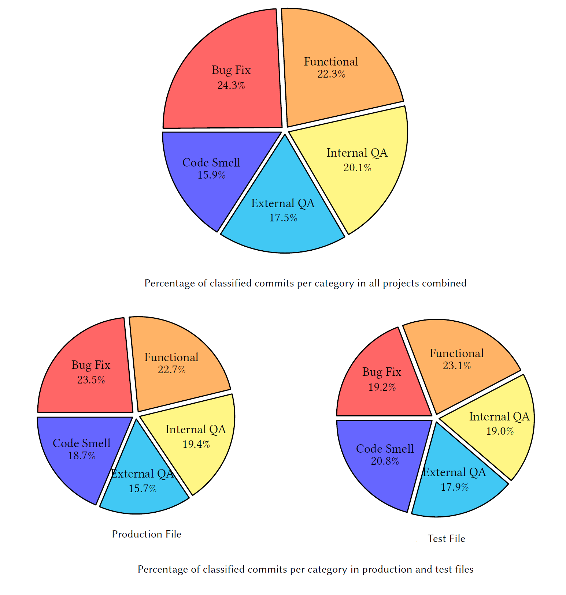

The below figure shows the categorization of commits, from all projects combined. All of the categories had a uniform distribution of refactoring classes. For instance, Bug Fix, Functional, Internal QA, External QA, and Code Smell Resolution had respectively commit message distribution percentages of 24.3%, 22.3%, 20.1%, 17.5%, and 15.9%.
The first observation that we can draw is that developers do not solely refactor their code to fix code smells. They instead refactor the code for multiple purposes. This can be explained by the fact that developers tend to make design-improvement decisions that include re-modularizing packages by moving classes, reducing class-level coupling, increasing cohesion by moving methods, and renaming elements to increase naming quality in the refactored design. Developers also tend to split classes and extract methods for: 1) separation of concerns, 2) helping in easily adding new features, 3) reducing bug propagation, and 4) improving the system’s non-functional attributes such as extensibility and maintainability.
The below figure also depicts the distribution of refactoring commits for all production and test files for each refactoring motivation. As can be seen, developers tend to refactor these two types of source files for several refactoring intentions, and they care about refactoring the logic of the application and refactoring the test code that verifies if the application works as expected. Although developers usually handle production and test code differently, the similarity of the patterns shows that they refactor these source files for the same reasons with unnoticeable differences.
